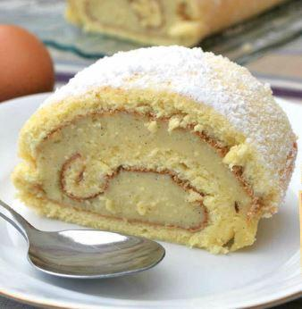

Le bras
de Vénus


⟹ Recette sucrée ⟸
Un biscuit tendre roulé sur une crème pâtissière à la vanille, une pluie de sucre glace, parfois des croisillons brûlés au fer rouge. De Barcelone à Perpignan, ce gâteau roulé est l'un des desserts préférés des Catalans. En Roussillon, on lui a donné un nom qui fait sourire : le bras de Vénus.
En Catalogne et dans toute l'Espagne, on l'appelle braç de gitano ou brazo de gitano, le « bras de gitan ». En Pyrénées-Orientales, il est devenu le bras de Vénus. Selon la tradition, le nouveau nom serait né d'une plaisanterie : la plus célèbre des Vénus, celle de Milo, a justement perdu ses bras. Le gâteau serait donc le bras qui lui manque.
C'est un gâteau simple : une génoise fine, cuite en quelques minutes, que l'on roule encore chaude sur une crème pâtissière parfumée à la vanille, au citron ou au rhum. On le saupoudre de sucre glace, et les pâtissiers catalans marquent souvent le dessus de croisillons au fer chauffé au rouge, comme pour la crème catalane.

D'où vient le nom de « bras de gitan » ? Personne ne le sait vraiment, et plusieurs histoires circulent. La plus populaire raconte qu'au XIXe siècle, des chaudronniers gitans réparaient les ustensiles de cuivre des pâtisseries de Barcelone. Pour les remercier, les pâtissiers leur donnaient les chutes de biscuit roulées avec de la crème, qu'ils emportaient sous le bras. D'autres y voient un avant-bras bronzé, ou une déformation de brazo egipciano, le « bras égyptien », recette qu'un moine aurait rapportée d'Égypte.
L'origine du nom est difficile à prouver, mais le lien entre chaudronniers et pâtissiers, lui, est bien réel : sans casseroles de cuivre, pas de confiserie.
Les premières mentions écrites du gâteau datent des années 1920, dans des livres de recettes et des articles de presse, mais il est sans doute plus ancien. En mars 2025, les quatre corporations de pâtissiers de Catalogne (Barcelone, Gérone, Lleida et Tarragone) l'ont désigné dessert emblématique de la Catalogne, pour l'année où la région était Région mondiale de la gastronomie. En Roussillon, il reste un incontournable des pâtisseries et des repas de famille.
Biscuit léger, crème vanillée, parfois une touche de rhum : le bras de Vénus appelle un vin doux naturel du Roussillon, frais et aromatique, ou des bulles légères.
Muscat de Rivesaltes
AOP · Pyrénées-Orientales (66)
Fleurs blanches, agrumes et pêche : sa fraîcheur répond à la vanille et au zeste de citron sans alourdir la crème.
Rivesaltes ambré
AOP · Pyrénées-Orientales (66)
Noix, fruits secs et caramel : idéal pour un bras de Vénus marqué au fer, ou parfumé au rhum.
Crémant de Limoux
AOP · Aude (11)
Brut et fin, il apporte de la légèreté à la fin d'un repas de fête.
Cava semi-seco
DO Cava · Catalogne (Espagne)
Le vin effervescent de l'autre côté des Pyrénées, légèrement doux, pour un clin d'œil à Barcelone.
La Vénus de Milo a perdu ses bras : selon une plaisanterie catalane, le gâteau roulé serait l'un d'eux.
Les chaudronniers gitans, l'avant-bras bronzé ou le « bras égyptien » rapporté par un moine : aucune n'est prouvée.
En mars 2025, les pâtissiers catalans l'ont élu dessert emblématique de la Catalogne, devant des dizaines d'autres.
En Amérique latine, notamment en Colombie et au Chili, on l'appelle « bras de reine ».